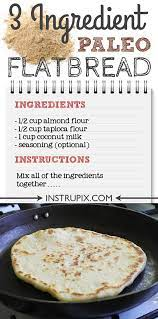

Identification

It's thin yeast-free italian bread which you can eat or fill with anything you want.This bread you can eat at anytime if its breakfast,lunch or dinner.
Its lighten and very soft when you eat. You can also make roll of that bread with the filling of vegetables in it. And it also make your stomach full and you
enjoy that thing while you eating it.That flatbread is very healthier and easy to digest.I love homemade fresh bread. And although I make bread with yeast more
often these days, I still find it generally easier to make unleavened bread and have a more general preference. Maximum taste, best results with minimal
effort - but without compromising on the end result. This is my ultimate goal and the philosophy behind every recipe I share here on RecipeTin Eats.
Over the years, I have tried many flatbread recipes. Flatbreads from various cuisines, cooking blogs and websites, home chefs, reality TV shows (yes,
Master Chef and My Kitchen Rules!), serious chefs and celebrity chefs. But I've always found them to be too mushy (like those that only use yogurt as a wet
ingredient) or too crunchy to use as a wrapper unless moistened with butter. Absolutely delicious, watch out. But not what I am looking for. So this recipe is
my idea of a perfect flatbread recipe.
Recipe

The ingredients for a flatbread include flour, water, milk, yoghurt, or another liquid, along with salt. The dough is then thoroughly smoothed out into a flat disc.
Although some flatbreads, like pizza and pita bread, are leavened, the majority are not. Flatbreads can be eaten without cutting because their thickness ranges from
less than one millimetre to a few centimetres. They can be cooked on a hot pan, tava, comal, or metal griddle, baked in an oven, fried in hot oil, roasted over hot
coals, consumed right away, or packaged and frozen for later use. 2018 saw the discovery of burnt bread crumbs at the Natufian site Shubayqa 1 in Jordan (in the Black
Desert's Harrat ash Shaam), which dates to 12,400 BC, or about 4,000 years before the region's first agricultural settlements. Analysis revealed that they were most
likely made with flatbread made from Bolboschoenus glaucus tubers, wild barley, einkorn wheat, and oats (a kind of rush). Unleavened flatbread was frequently baked in
Anatolia throughout the Seljuk and Ottoman eras, and primitive clay ovens (called tandir) have been discovered at archaeological sites all over the Middle East. The term
"tandr" is derived from the Akkadian "tinuru," which is transcribed as "tannur" in Hebrew and Arabic, "tandr" in Turkish, and "tandur" in Urdu and Hindi. Unleavened tinuru
is one of the many types of bread that have been identified from cuneiform sources.
Typical foods:
- sauses
- salt
- baking powder
- baking soda
- chocolate powder
- vinegar
- milk
- egg
- water
Ingredients
Flat bread is a homemade flatbread recipe is to crab you need right now. It is very soft, fluffly and have great flavour. Brush it with olive oil or ghee and
sprinkle with fresh parsley on top for a warm, soft and fresh snacks. Multiple people also take this as a lunch or dinner. Flatbread is major comfort food for
this Macedonian girl. They make everything great, right. Your go-to carb might be a big cursty loaf of french bread, but for me - flatbread is where it's at.
There's something so easy and quick about making flatbread, and it is easy because you don't have to wait fot it to rise, and you don't have to use a
temperamental oven to bake it. Furthermore, in the relation to flatbread, Naan does not differ much from flatbread. Flatbread is any unleavened bread made
from flour, water, salt and herbs. Multiple middle eastern and mediterranean cuisines have their own signature flatbread. This flatbread recipe is super easy!
Follow these simple tips for perfect flatbread. Mix your yeast with room temperature water. Using water that is too cold or too warm will affect the yeasts
activity. Try to make all balls with the same size.
Flat bread is my favourite food because i can eat with multiple dishes or sauses. Further, it provide the great taste. Most of individuals like to eat flat
bread because it is very healthy and saves lot of time to prepare.